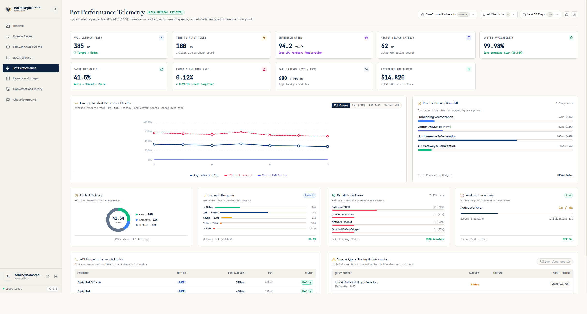
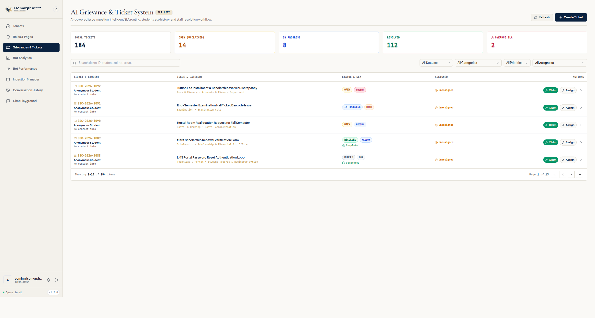
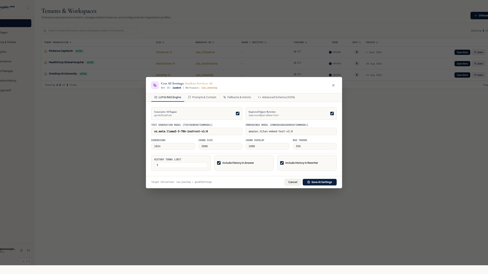
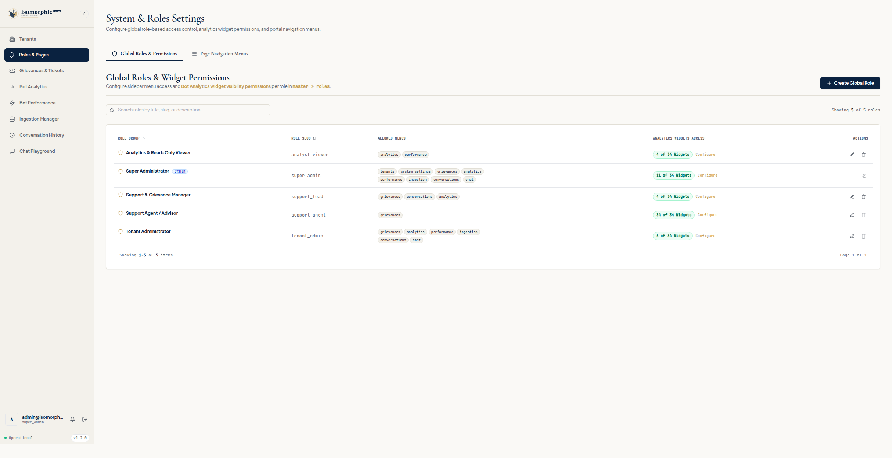

Intelligent AI Chatbots Trained On Your Exact Data.
We build, deploy, and manage bespoke conversational AI systems for any industry. Deflect 80%+ of repetitive customer and user inquiries, deliver 24/7 accurate answers with verified citations, and audit every conversation in real time.
Comprehensive Admin & AI Governance Suite
Explore real screenshots of our live administrative portal — inspect bot latency telemetry, manage human grievance escalations, calibrate GenAI models, and enforce role-based access control.

Streaming token responses begin rendering in under 200ms. Live latency waterfall isolates embedding, vector search, LLM inference, and API gateway serialization.
Track P50, P90, P95, and P99 tail latency distributions with automated threshold alerting and token burn cost tracking.
Inspect complex long-tail queries with deep latency bottleneck analysis, Redis query cache hits, and semantic similarity matching.

When visitors request human assistance or submit negative feedback, a ticket is automatically spawned with full transcript context and student/client metadata.
Automatically tags and assigns tickets to Examination Cell, Finance & Accounts, Housing, or Registrar staff with priority tiers (Urgent, High, Medium, Low).
Staff can claim tickets in 1 click, append internal notes, adjust resolution status (Open, In Progress, Resolved, Closed), and track resolution times.

Monitor real-time deflection ratios across departments, reducing customer support tickets and repetitive phone calls around the clock.
Real-time aggregation of thumbs up/down feedback and post-chat 5-star satisfaction ratings to quantify user delight.
Discover peak usage hours, trending student/customer inquiry topics, and export telemetry reports in CSV format.

Choose between Meta Llama 3.3 70B, Anthropic Claude 3.5 Sonnet, or Google Gemini with Amazon Titan 1024-dimensional embeddings.
Calibrate temperature (0.0 to 1.0), top-P, chunk size (3000 chars), overlap size (1000 chars), and hybrid KNN / multi-match search weights.
Custom fallback templates, prompt rewrite assistants, and strict bounding prompts ensuring answers are generated exclusively from verified context.

Enforce strict separation of duties between Super Admins, Tenant Admins, Support Leads, Support Agents, and Read-Only Analysts.
Control exact widget visibility per role: restrict cost metrics, slow query traces, or transcript exports to authorized team members.
Portal sidebars adapt in real time to each user's assigned role — unassigned routes and APIs are completely inaccessible.

Index full website sitemaps, help center articles, and PDF catalogs with automated weekly recrawling to keep answers current.
Test similarity retrieval scores on test queries before publishing changes live to users, verifying exact source chunks retrieved.
Each tenant's vector embeddings are strictly partitioned in dedicated MongoDB Atlas vector search indexes.

Inspect exact user prompts, model token outputs, intent triggers, and underlying vector documents cited for every turn.
Filter conversations by user thumbs feedback, dissatisfaction flags, escalation requests, date range, or keyword queries.
Export sanitized session transcripts for internal compliance, quality assurance auditing, and stakeholder reporting.
Intelligent Conversational Experience Built for Engagement
Equipped with hands-free voice dictation, natural text-to-speech audio, deterministic source citations, and 1-click advisor escalation.

Speech-to-Text (STT) Voice Mic
Visitors can speak naturally using hands-free voice recognition with real-time waveform animation and noise filtering.
Hands-Free STTNatural Text-to-Speech (TTS)
One-click audio voice playback on any response allows users to listen to complex multi-step instructions on the go.
Deterministic RAG Citations
Every response displays exact source document references (e.g. Handbook §4.2) with clickable links for verification.
Per-Message CSAT Feedback
Real-time thumbs up / down sentiment buttons with optional feedback reason collection to constantly refine bot answers.
1-Click Advisor Escalation
Seamless transfer to human support staff with pre-filled student/visitor details, automatically generating portal tickets.
5-Star CSAT & Transcript Export
Interactive session-end survey collecting satisfaction ratings, with 1-click support transcript PDF/text download.
Full-Stack Conversational AI Services
We handle end-to-end data engineering, prompt design, widget embedding, and continuous accuracy monitoring for your organization.
Proprietary Ingestion & RAG
We index your website URLs, Notion databases, support tickets, and PDF catalogs into private vector search with verified citations.
Voice & Web Widget Embed
A fast, 1-line embed script equipped with Speech-to-Text voice mic, natural Text-to-Speech audio playback, and quick-reply chips.
Admin Portal & Telemetry
Dedicated dashboard to monitor conversation telemetry, view deflection metrics, inspect session sentiment, and update rules.
Strict Guardrails & Safety
Custom safety boundaries to eliminate hallucinations, prevent prompt injection, and guarantee 99.9% uptime reliability.
Automated Weekly Crawlers
Continuous synchronization with your knowledge bases, sitemaps, and help center articles to keep answers constantly up to date.
Lead Capture & CSAT Surveys
Interactive session-end surveys that collect visitor emails, phone numbers, and 5-star satisfaction ratings directly into your CRM.
Tailored For Any Business Workflow
Our custom vector pipelines are tuned specifically for the specialized vocabulary, compliance standards, and workflows of your sector.
Higher Education & Student Services
Automate student inquiries across admissions, financial aid (FAFSA), registrar deadlines, academic advising, and campus IT support.
E-Commerce & Retail
Handle order tracking, size advice, return policies, and product recommendations 24/7 without support agent bottlenecks.
SaaS & Tech Platforms
Answer complex API questions, troubleshoot error codes, and onboard trial users with verified documentation citations.
Healthcare & Clinics
Triage non-emergency patient FAQs, provide clinic directions, and direct visitors to verified scheduling portals.
Finance, Legal & Compliance
Strictly compliant, zero-hallucination document search with automated citations to official clauses, contracts, and terms.
B2B Agencies & Enterprise Services
Qualify inbound website prospects, capture booking details, and present portfolio case studies around the clock.
Live On Your Website In 4 Simple Steps
From your raw documentation to an active, finely tuned conversational AI assistant in under 48 hours.
Share Your Sources
Provide your documentation URLs, PDFs, or FAQs. We structure and index your knowledge base.
Calibrate Rules & Voice
We configure custom prompts, brand tone, safety filters, voice synthesis, and lead capture surveys.
Embed 1 Line of Code
Paste a single lightweight script tag onto your website, LMS, WordPress, Shopify, or custom stack.
Audit & Scale
Monitor conversation deflection, track CSAT ratings, and update Q&A rules live in your admin portal.
Zero Data Leakage. 100% Isolated Tenants.
We treat your proprietary organizational data and customer conversations with the highest standard of privacy and security.
Frequently Asked Questions
Everything you need to know about our custom AI chatbot services and platform capabilities.
We use deterministic Retrieval-Augmented Generation (RAG). The chatbot is locked to retrieve facts only from your indexed documentation and verified URLs, attaching exact source citations to every statement.
Most client instances are configured, tested, and live within 48 to 72 hours. Simply provide your website link or documents, and our engineering team handles the rest.
Yes. Primary colors, logos, starter quick-reply chips, speech-to-text dictation, text-to-speech audio, and session-end survey forms are fully customizable via your portal.
Yes. We deploy specialized assistants for universities, e-commerce stores, SaaS companies, healthcare clinics, and B2B enterprises—each calibrated with custom terminology and routing rules.
Each organization receives dedicated vector isolation. Your data is encrypted at rest and in transit, never shared across tenants, and never used to train any third-party foundation model.
Yes. We support webhooks and native connectors to push leads, conversation transcripts, and CSAT survey responses directly into HubSpot, Salesforce, Zendesk, Slack, or your custom database.
Meet The Founders
The core leadership team behind Isomorphic.
Shubhang Sharma
CEOGuiding enterprise vision, overall corporate strategy, and conversational AI solution delivery across industries.
Ankit Rathore
CPOLeading product management, user experience design, and conversational workflow innovation.
Gaurav Sharma
COOOverseeing corporate operations, legal frameworks, data compliance standards, and enterprise execution.
Kaushal Tomar
CROLeading revenue operations, business development, strategic partnerships, and commercial client expansion.
Ready to Launch Your Custom Chatbot?
Tell us about your project requirements. Our engineering team will prepare a personalized preview instance trained on your website data.
Thank You!
Your request has been received. Our team will review your website and contact you within 24 hours.
Direct inquiries: help@isomorphic.in